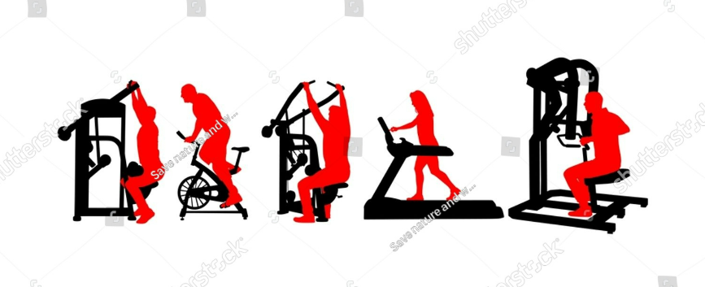
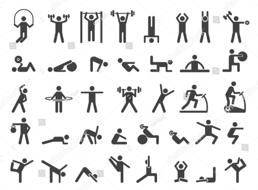
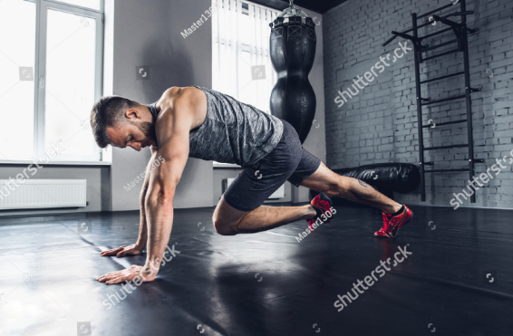

Načrt treninga
Izbira pravega načrta treniranja za posameznika je ključnega pomena za doseganje optimalnih rezultatov in izpolnitev ciljev vadbe. Vsak posameznik ima edinstveno telesno kondicijo, cilje, potrebe in omejitve, zato je pomembno prilagoditi načrt vadbe tem specifičnim dejavnikom.
- Pravi načrt treniranja upošteva vašo trenutno telesno pripravljenost, zdravstveno stanje, prehranjevalne navade, časovne omejitve in cilje vadbe. Z ustrezno prilagojenim načrtom boste optimizirali rezultate, zmanjšali tveganje za poškodbe in povečali učinkovitost vadbe.
- Naša spletna stran vam nudi prav to - strokovne smernice in nasvete pri izbiri pravega načrta treniranja, ki je prilagojen vašim potrebam in ciljem. Ponujamo različne programe vadbe, od začetniških do naprednih, ki vključujejo raznolike vaje, prilagojene obremenitve in napredno periodizacijo vadbe.
| Načrt |
Ponedeljek |
Torek |
Sreda |
Četrtek |
Petek |
Sobota |
Nedelja |
Ponedeljek |
| Potisk, Vlečenje, Noge |
Potisk |
Vlečenje |
Noge |
Počitek |
Potisk |
Vlečenje |
Noge |
Počitek |
| Celo telo |
Trening |
Počitek |
Trening |
Počitek |
Trening |
Počitek |
Počitek |
Trening |
| Zgornji del, Spodnji del |
Zgornji del |
Spodnji del |
Počitek |
Zgornji del |
Spodnji del |
Počitek |
Zgornji del |
Spodnji del |
Poleg tega, da vam pomagamo pri izbiri pravega načrta treniranja, vam nudimo tudi podporo in motivacijo skozi celotno fitnes potovanje. Naša ekipa strokovnjakov je na voljo za odgovore na vaša vprašanja, nasvete o pravilni izvedbi vaj ter spodbujanje in navdihovanje za dosego vaših ciljev.
Push, Pull, Legs
Metoda treninga "push, pull, legs" je priljubljen in učinkovit način organiziranja treningov, ki ciljajo na različne mišične skupine. Ta metoda temelji na delitvi vadbenih dni v tri glavne skupine: push (potisk), pull (vlečenje) in legs (noge). Vsaka skupina vključuje vaje, ki se osredotočajo na specifične mišične skupine in gibe.

- Push (potisk): Na dan push treniranja se osredotočite na mišične skupine, ki so vključene v potiskajoče gibe. To vključuje prsne mišice, deltoidne mišice (ramenske mišice) in triceps. Primeri vaj za push trening so sklece, shoulder press, dips (potopi) in bench press (potisk s klopi).
Prsa
Rame
Triceps
- Pull (vlečenje): Na dan pull treniranja se osredotočite na mišične skupine, ki so vključene v vlečne gibe. To vključuje hrbtno mišičje, bicepse in deltoidne mišice zadnjega dela. Primeri vaj za pull trening so veslanje, pull-up (poteg na drogu), lat pulldown (vlečenje na lat mašini) in bicep curls (vlečenje s utežmi za bicepse).
Hrbet
Biceps
- Legs (noge): Na dan legs treniranja se osredotočite na mišične skupine nog. To vključuje stegenske mišice, meča in zadnjico. Primeri vaj za legs trening so počepi (squat), izpadni koraki (lunges), deadlift in izteg nog (leg extensions).
Noge
Ta način treninga omogoča enakomerno obremenitev telesa, saj se mišične skupine na različnih dnevih izmenjujejo. S tem se omogoča tudi dovolj časa za regeneracijo posameznih mišičnih skupin med treningi. Pomembno je prilagoditi intenziteto in obremenitev glede na lastne sposobnosti in cilje vadbe
Sistem push, pull, legs vam omogoča strukturirano in uravnoteženo vadbo, ki vključuje celotno telo. Redno izvajanje te metode treniranja lahko prispeva k povečanju mišične mase, izboljšanju moči, vzdržljivosti ter oblikovanju in definiciji mišic.
Celo telo(Full body)
Metoda treninga "full body" se osredotoča na vadbo celotnega telesa v eni trening seansi. V tem načinu treniranja vključite vaje, ki ciljajo na različne mišične skupine po celem telesu. Glavna prednost tega načina treniranja je, da omogoča celovit trening v eni seansi, kar je še posebej koristno za začetnike ali tiste, ki imajo omejen čas za vadbo.

Pri treningu full body lahko izvajate več vaj za različne mišične skupine, vključno s prsnimi mišicami, hrbtnimi mišicami, ramenskimi mišicami, bicepsi, tricepsi, stegenskimi mišicami, meči in trebušnimi mišicami. Pomembno je izbrati raznolike vaje, ki vključujejo tako potiskajoče kot vlečne gibe, ter vaje za zgornji in spodnji del telesa.
Vse mišice
Priporočeno je izvesti 8-12 različnih vaj, pri čemer se osredotočite na osnovne večzgibne vaje, kot so počepi (squat), mrtvi dvig (deadlift), sklece (push-ups), veslanje (rows), izpadni koraki (lunges) in ramenski potisk (overhead press). Dodajte lahko tudi izolacijske vaje, kot so bicep curls, tricep extensions, lateralne dvige z utežmi in trebušne vaje
Trening full body ponuja celovit pristop k treniranju, ki omogoča razvoj moči, mišične mase, vzdržljivosti in funkcionalnosti telesa. Prav tako je učinkovit pri povečanju metabolizma, izgubi maščobe in izboljšanju telesne pripravljenosti. Pomembno je prilagoditi trening svojim sposobnostim, ciljem in omejitvam ter se posvetovati z usposobljenim trenerjem, če potrebujete dodatno usmeritev pri izvajanju vaj in sestavi programa vadbe.
Upper, Lower
Metoda treninga "upper, lower" je način razdelitve vadbenih dni na treninge zgornjega dela telesa (upper) in spodnjega dela telesa (lower). Ta pristop omogoča ciljno usmerjenost na specifične mišične skupine v posameznem treningu, kar omogoča večji obseg vadbe za vsak del telesa.

- Upper (zgornji del): Na dan upper treniranja se osredotočite na mišične skupine zgornjega dela telesa, kot so prsne mišice, deltoidne mišice (ramena), hrbtno mišičje, bicepsi in tricepsi. Primeri vaj za upper trening vključujejo bench press (potisk s klopi), sklece, veslanje, militarni potisk (military press), bicep curls (vlečenje s utežmi za bicepse) in tricep dips (potopi).
Prsa
Rame
Triceps
Hrbet
Podlaht
Biceps
- Lower (spodnji del): Na dan lower treniranja se osredotočite na mišične skupine spodnjega dela telesa, kot so stegenske mišice, meča, zadnjica in trebušne mišice. Primeri vaj za lower trening vključujejo počepi (squat), izpadni koraki (lunges), deadlift, izteg nog (leg extensions), mečne dvige (calf raises) in trebušne vaje, kot so plank (deska) in leg raises.
Noge
Trebuh
Pri treningu upper, lower je priporočljivo izvajati treninge 3-4 krat na teden, kjer se izmenjujejo dnevi upper in lower. To omogoča zadostno okrevanje mišic med treningi. Pomembno je upoštevati pravilno tehniko izvajanja vaj, postopoma povečevati obremenitve in prilagajati vadbeni volumen glede na svoje sposobnosti.
Metoda upper, lower omogoča celovit trening telesa, saj se osredotoča na različne mišične skupine in omogoča ustrezno stimulacijo mišic za razvoj moči, mišične mase, vzdržljivosti in oblikovanje telesa. Prav tako omogoča večjo fleksibilnost pri prilagajanju treninga glede na lastne cilje in potrebe. Pri izvajanju treninga je vedno pomembno posvetiti pozornost varnosti, pravilni tehniki in pravilnemu ogrevanju pred treningom.
 Močno Telo
Močno Telo